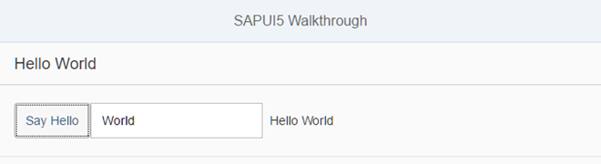

Step 11: Pages and Panels
After all the work on the app structure it’s time to improve the look of our app. We will use two controls from the sap.m library to add a bit more "bling" to our UI. You will also learn about control aggregations in this step.
Preview

A panel is now displaying the controls from the previous stepsCoding
You can view and download all files at Walkthrough - Step 11.
webapp/view/App.view.xml
<mvc:View controllerName="sap.ui.demo.walkthrough.controller.App" xmlns="sap.m" xmlns:mvc="sap.ui.core.mvc" displayBlock="true"> <App> <pages> <Page title="{i18n>homePageTitle}"> <content> <Panel headerText="{i18n>helloPanelTitle}"> <content> <Button text="{i18n>showHelloButtonText}" press=".onShowHello"/> <Input value="{/recipient/name}" description="Hello {/recipient/name}" valueLiveUpdate="true" width="60%"/> </content> </Panel> </content> </Page> </pages> </App> </mvc:View>
We put both the input field and the button inside a containing control called sap.m.Page. The page provides an aggregation to
0..N other controls called content. It also displays the title attribute in a header section on
top of the content. The page itself is placed into the pages aggregation of another control called
sap.m.App which does the following important things for us:
-
It writes a bunch of properties into the header of the index.html that are necessary for proper display on mobile devices.
-
It offers functionality to navigate between pages with animations. We will use this soon.
webapp/i18n/i18n.properties
# App Descriptor appTitle=Hello World appDescription=A simple walkthrough app that explains the most important concepts of OpenUI5 # Hello Panel showHelloButtonText=Say Hello helloMsg=Hello {0} homePageTitle=Walkthrough helloPanelTitle=Hello World
We add new key/value pairs to our text bundle for the start page title and the panel title.